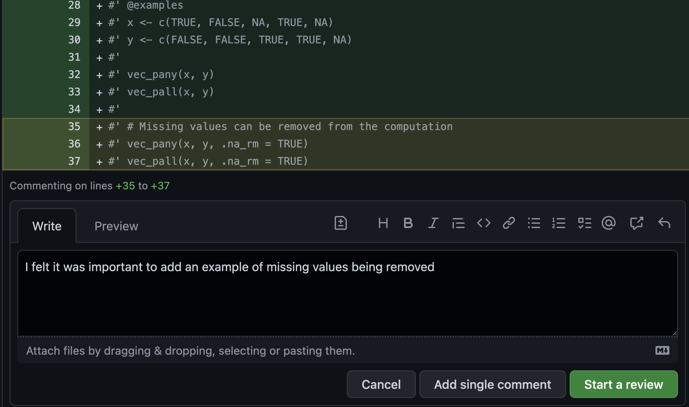
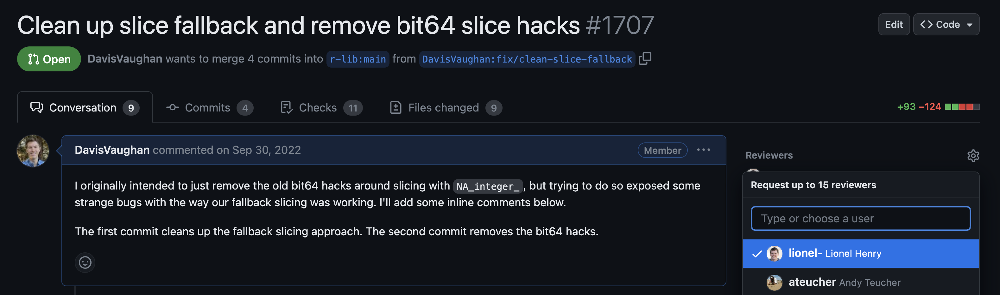
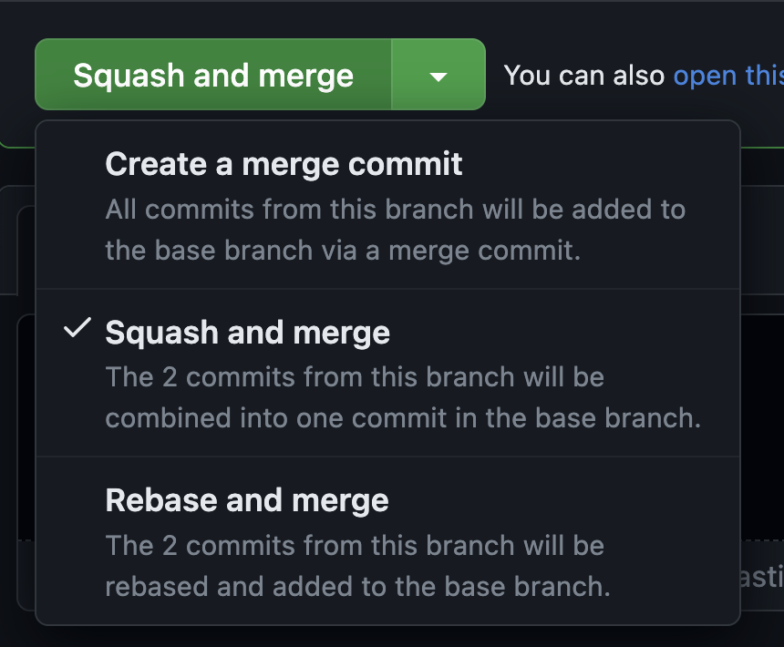

7 Submitting a PR
7.1 Writing PR descriptions
When you submit a pull request through GitHub, you are able to include a PR title and a PR description detailing what the pull request is about. Leaving a detailed and useful description is a vital part of ensuring that your reviewer has a successful experience. There are three big reasons why writing a comprehensive PR description is useful:
You have the opportunity to orient and prepare your reviewer for your PR before they’ve seen any code.
Forcing yourself to describe (in words) how your PR works is actually a great way to check that it is implemented correctly. If you are having trouble describing the PR, it probably needs to be broken down into simpler pieces.
You can take advantage of GitHub specific features, including auto-closing issues, referencing related issues, checklists, and commenting on your own PR.
Future developers will search for your PR based on its description. Someone in the future might be looking for your change because of a faint memory of its relevance but without the specifics handy. If all the important information is in the code and not the description, it’s going to be a lot harder for them to locate your PR.
7.1.1 Orienting your reviewer
7.1.1.1 Title
The title of your pull request should be a very short summary of what is being done. Ideally it should be shorter than 72 characters, because this is what appears in version control history summaries and that is the typical limit before the title is truncated. It should be informative enough that future code searchers don’t have to read your PR or its whole description to understand what your PR actually did. That is, the first line should stand alone, allowing readers to skim through code history much faster.
Bad titles typically don’t contain enough context about the problem the PR is trying to solve. “Fix bug” is an inadequate PR title. What bug? What did you do to fix it? Other similarly bad titles include:
- “Add patch”
- “Fixes #123”
- “Moving code from A to B”
- “Phase 1”
- “Add convenience functions”
Avoid restating the title of the corresponding issue in the title of the PR. Focus on summarizing what the actual change you made does, rather than what is being fixed.
7.1.1.2 Body
The body of a PR description should contain the context a reviewer needs to get into a mental state where they can understand your PR. It might include:
A brief description of the problem being solved
Possible shortcomings of the approach being used
Links to other relevant issues (using GitHub features)
A before/after reprex that shows what the behavior used to be vs the behavior in this PR
A before/after benchmark (using the bench package)
The description should give your reviewer an idea of the code they are about to see, even before they’ve looked at it. By outlining any potential shortcomings, you give the reviewer ideas to keep in mind while they look over your code.
If your PR closes a complicated issue that involved a large amount of back and forth discussion, it is worth summarizing the outcome of that discussion in the body of the description. This is especially important if the reviewer wasn’t a part of that discussion, since they’d otherwise have to wade through a large amount of comments to understand why this particular implementation was chosen.
7.1.1.2.1 Reading order
For large PRs, it can also be useful to suggest a recommended reading order to your reviewer. This might involve looking at one particular function before another, but could also be a suggestion to look at the examples or tests before looking at the implementation itself, if you feel that they would clarify the purpose of the PR.
7.1.2 Examples of good PR descriptions
7.1.2.1 New feature
This vctrs PR contains an example of adding a new feature to an existing function. In this case, a new relationship argument was added to vctrs::vec_locate_matches(), a function that underlies dplyr’s joins, like left_join(). In this case, the total number of changed lines was fairly high, but that is mostly due to a combination of having to touch R code, C code, documentation, and adding new tests. The important thing here is that all of the changes are highly connected, and nothing is extraneous.
There are a number of things that are useful to point out regarding this PR:
This was a case where the author felt like the reviewer might not be as “close” to the code as the author was, so a high-level review to look for any structural problems was good enough. Since an in-depth review is the default, the author made sure to mention that a high-level review was fine up near the top of the description.
The description enumerates the possible options for
relationship, along with giving examples of how it would directly tie into dplyr (i.e. providing broader context outside just this PR), and inline code examples. This gives the reviewer as much context as possible up front, and creates an extremely useful history to look back on if the PR ever needs to be revisited.The author provided a number of inline comments to call out particularly tricky parts of the code that might need more context. In particular, the author brought up one place in the existing code that he found confusing, which the reviewer also agreed was confusing. This was then acted upon in a separate PR (importantly, not in this one, since the change was unrelated).
The reviewer brought up a concern of their own, which the author then provided justification for, and the “tie” went to the author since neither party felt strongly about it.
7.1.2.2 Performance improvement
This vctrs PR contains an example of a PR intended to improve the performance of the dictionary data structure used by many functions in that package. If you look at the changed lines of code, there is really only 1 changed line:
const double load_adjusted_size = x_size / 0.77;Changed to:
const double load_adjusted_size = x_size / 0.50;This is an example where even though the number of lines of changed code is very small, the PR itself required a large amount of context and justification. This context doesn’t belong inside the codebase, but is important for the reviewer as they try to understand why this change was made and whether or not it was the right decision. The PR mentions:
Other sources of information justifying the change
Before/after benchmarks showing improved performance
Cases where the performance doesn’t improve, and context about why
7.2 GitHub features
7.2.1 Closes
In the description body, it is useful to mention what issue is closed or fixed by this PR. Specifically, if you mention Closes #545 or Fixes #545 in the body of your PR description, then GitHub will automatically close that issue when the PR is merged. This also helps provide context to both the reviewer and future developers.
If you’d like to refer to another issue or PR without closing it, then using terminology like Related to #545 or Part of #545 is a useful way to connect the PR to the issue even if it doesn’t fully resolve it (and GitHub doesn’t do anything special with these phrases).
7.2.2 Checklists
Since GitHub supports Markdown, you can also add checklists to your PR descriptions like this:
- [ ] Don't forget this
- [ ] And thisWhich get rendered in the GitHub UI as:

Checklists are particularly useful in combination with Draft PRs where you might push a partially finished PR to GitHub (to get CI to run, or to ask for advice), but you still have a number of tweaks to make that you don’t want to forget about.
7.2.3 Commenting on your own PR
GitHub allows the PR author to also be their own reviewer. If you open the Files changed menu on GitHub, you can add comments on sections of code that you’ve written, like this:

Once you’ve added your “review,” you can then Comment on the PR:

You won’t be able to Approve, as you can’t approve your own PR.
Commenting on your own PR is a great way to provide scoped comments inline with the code that they are related to. Comments like this are also great because they start a thread where a reviewer can easily respond to that point without cluttering the rest of the PR. Once the comment has been addressed, it can optionally be marked as resolved by the PR author and collapsed.
PR comments like this should be reserved for ideas that don’t belong in the codebase itself (i.e. as a code comment). They typically call the reviewer’s attention to something in the PR that they might otherwise miss, or they call out a part of the code that the PR author is a little uncertain about.
Here are a few real examples of tidyteam members commenting on our own PRs:
7.3 Review before submitting
PRs can undergo significant change during review. It can be worthwhile to review a PR description before submitting the PR, to ensure that the description still reflects what the PR does and that it is grammatically correct.
If your codebase uses continuous integration to also run checks on your PR, you should also ensure that those are all passing before requesting a review.
7.4 Requesting a review
For close-knit collaboration and when submitting a PR as an understudy, it is expected that the author will use GitHub’s “request a review” feature to officially ask one or more colleagues to be their reviewer.

The reviewer you choose depends on their expertise on the part of the codebase your PR affects. Occasionally, it can be useful to select two reviewers for different purposes - one for high-level API design feedback, and one for a full in-depth review.
For external contributions, the author likely won’t have the ability to select a reviewer. In this case, it is expected that the maintainer of the package will review the PR when they next actively work on it. If the author is a Posit employee and this PR is blocking other work, then the author should reach out to the maintainer (i.e. over Slack) to agree on an expected timeline for the review.
7.5 Finishing a PR
After you have handled the comments from your reviewer, the PR can get merged in a variety of ways, depending on the collaboration pattern being used.
For close-knit collaboration and when working as an understudy, the PR author is typically expected to merge the PR after receiving approval from the reviewer and addressing all comments. After approval is received, the author is no longer required to wait on further feedback from the reviewer before merging.
For external contributions, the author likely does not have permission to merge the PR. Instead, it is expected that the reviewer (who is likely also someone with commit rights) will merge the PR for you after all comments have been addressed. Depending on the circumstances, the reviewer may also finish off the PR for you.
GitHub provides various options for actually merging the PR:

Most of the time, we use Squash and merge, which collapses all of the commits into a single commit that gets merged into the main branch. Because of this, we typically don’t care what the commit history of the actual PR looks like, because it will likely be collapsed anyways.
If the commit history of the PR has been purposefully structured in a meaningful way, we may also use Create a merge commit to retain the full history.
After the PR has been merged, usethis::pr_finish() can be used to delete the local (and possibly remote) PR branch and switch back to the default branch.
7.6 Draft PRs
If you aren’t quite ready to submit your PR for a full review, but still want to have it up on GitHub (for CI purposes, perhaps), then you can open a Draft PR. When a PR is in draft form, this is a signal to your collaborators that they don’t need to worry themselves with that PR yet.
Draft PRs are particularly nice for PRs that you want to get into a “final state” (with CI run and a description written), but you’d also like to sleep on it and give it one last self-review on the following day before requesting a review from a colleague. It is amazing how many small bugs and documentation typos you can find after self-reviewing a PR the day after you wrote it! This also saves time for your eventual reviewer, since you’ve improved the quality of the PR before they’ve even taken a look at it.
A draft PR is also useful if you want to park a proof of concept somewhere, knowing that you will come back and clean it up in the future.
7.7 Self-reviews
While this guide mostly focuses on writing PRs with the goal of being reviewed by someone else, it is also useful to create a PR even if no one else is going to review it. This situation typically arises if you are the only one working on a package, or if you are creating a new package undergoing rapid development. Like with draft PRs, opening a PR, sleeping on it, and then rereading it the following day will often reveal bugs or typos that you’ve missed. Functioning as your own reviewer is a great way to practice the principles outlined in this guide, even if you don’t work on a team, and can prepare you for future collaborative work.
Leaving a detailed PR description for yourself has more benefits than you might think. Two of the three reasons for writing a good description outlined at the beginning of this section still apply - forcing yourself to describe the feature in words and using GitHub’s many features. It also provides valuable historical context if someone else (likely you) needs to come back to this PR months from now to understand why a particular line was implemented a certain way.
Opening a PR also forces CI to run, giving you a chance to fix any minor issues before merging it into your main branch. Since CI often takes a few minutes to run, it is typically useful to open a PR and then start working on a separate feature while that CI is running. Once the second feature is finished, you can open a PR for that one, then go back to the first PR and merge it in (possibly giving it a self-review before you do so). The usethis::pr_*() family of functions is particularly suited to this workflow. As long as you are careful to avoid merge conflicts, this allows you to efficiently work on multiple features in parallel.